A Novel Multimodal Model for
Event Detection in
Videos
Ian Logan Wesson
(安龙)
June 2020
A Novel Multimodal Model for
Event Detection in
Videos
Candidate.............................................................................
School of
Study.............................................................................
Student’s
Number.............................................................................
Supervisor.............................................................................
Chair of Defense
Committee.............................................................................
Degree
Applied.............................................................................
Major.............................................................................
Date of
Defense.............................................................................
Ian Logan Wesson 安龙
School of Computer Science
3820181125
张华平 Hua Ping Zhang
Master of Computer
Science
Computer Science and
Technology
June 2020
Declaration of
Originality
I hereby declare that this thesis is
the result of an independent research that I have made under the supervision of my supervisor.
To the best of my knowledge and belief, it does not contain any other published or unpublished
research work of others, or any material which has been accepted for the award of another degree
or diploma at Beijing Institute of Technology or other educational institutions, except where
due acknowledgment has been made in the text. Whoever has contributed to this study is
explicitly identified and appreciated in the Acknowledgements of the thesis.
Signature of
Author:
Date:
Authorization Statement
I
fully understand the regulations of Beijing Institute of
Technology regarding the preservation and use of the degree
thesis. BIT is granted the right to (1) preserve the
original thesis and the copies of the thesis, as well
as submit them to relevant authorities; (2) reproduce and
preserve the thesis by means of photocopy, reduction
printing and any other means; (3) keep the thesis for
reference and borrowing; (4) reproduce, give and exchange
the thesis for the purpose of academic exchange; (5) publish
the thesis
wholly and partially. (The regulations
comes into force for confidential thesis only after
declassification)
Student’s signature： Date:
Supervisor’s signature： Date:
I personally, and this research, have been helped along by quite a
few different people, all contributing in their own way.
I would like to thank: (1) my family for their relentless
support for my education, (2) my professors at BIT for their
invaluable academic guidance and assistance adapting to a new
country, and (3) the People's Republic of China for their awesome
scholarship program, accomidating nature, and help
exploring a formerly cryptic side of world.
I am especially grateful for all the intelligent, hard-working, and kind
friends I have met during my studies
at BIT; the pages of this thesis could be entirely filled with this
endless list of names, but I used WeChat for storing that list
instead.
-Ian Wesson (安龙)
Querying videos for many types of information, from cats and dogs, to instances of
crime, abuse, violence or terrorism, in a way that returns a frame-by-frame analysis is becoming more and
more important with the rapid expansion of online videos, especially for social media sites. Although there
is some research into video classification, event detection in video analysis is still largely
underdeveloped. For starters, even readily available open- source research into video event detection does
not use a multimodal approach. Moreover, natural language processing and linguistic modalities are often not
even used as a
way of detecting events in any video analysis software. Last but not least, all frame-by-frame solutions to
video analysis are proprietary or closed-source.
Compared to other modern video analysis tools and techniques, the proposed
framework: (1) will implement a novel multimodal model for detecting events; (2) will utilize existing
natural language processing software as an intermediate processing layer; and (3) will not be
proprietary or closed source, but instead be built from entirely open-source software and hosted on a
publicly accessible source code revision control platform (GitHub). The proposed framework has changed
since there has been time to develop it, as many different tools and methodologies were briefly tested
as a robust prototype system evolved over the duration of the research.
The main innovation of this research is a client-server system which combines
frame image classification probabilities and classes with the their class word
embeddings. This enables the desired ability of the end user to create complex visual queries
of video frames via the positive and negative query strings quickly and efficiently, with ever
improving accuracy and precision with each refinement of a query.
The main contribution of this research is final open-source project. The academic and
open-source coding communities will hopefully benifit from a good example on how to
implement this type of research. The final open-source project could be used as a learning
tool, or even example code, for creating more effective neural network based architectures for
video content monitoring and browsing in the future.
Key
Words: Multimodal;
Neural Network; Machine Learning; Computer Vision; Natural Language Processing; Audio Signal
Processing; Time Series Prediction;
The proposed framework was designed around a novel multimodal model which would
process the output of the following open-source NodeJS software solutions: automatic speech recognition
(using the deepspeech npm library), object detection (using the opencv4nodejs or tensorflowjs npmlibraries),
and natural language processing (using the word2vector npm library).
The main objective of the work proposed was finding the best combinations of
libraries, programming tools, and even operating systems, suitable for creating an efficient and
innovative neural network audio/video applications research and development environment. During this extensive
search, different API’s, such as OpenCV, PyTorch, and TensorFlow, in various languages, including NPM/NodeJS,
JavaScript, and Python, were tested on the Windows 10, Ubuntu 19.04, and Linux Mint 19.3 operating
systems.
For our particular hardware setup, the most suitable OS, library, and language
we found for developing machine learning software ended up being as follows:
Linux Mint with Pytorch and TensorFlow/Keras in Python 3.6.9.
You can find an
online copy of the final project code on GitHub. The project link you should refer to when
reading this document is a link is to a specific branch named ”thesis” of a GitHub repository
(which will host future developments on the ”master” branch):
https://github.com/CrazedCoding/CrazedCoding.com/tree/thesis
One of the accomplishments of this research includes a multimodal
neural network model based system that allows users to process videos frame-by-frame for
images with content of varying degrees of similarity to query string parameters. The research
on this topic covered in
through
, and the experiments for this are
covered in
The second accomplishment of this
research was the creation of a command-line tool which enabled the user to train a
multi-layer neural network to learn and predict audio samples. The research on this topic
covered in
and the experiments are in
.
Of the many other various audio/video machine learning approaches that exist today, several are
discussed in detail in :
- An ensemble deep learning framework than analyzes soccer videos is discussed in
- A multimodal deep learning framework for classifying videos is discussed in
- Classification of video sequences in cricket videos is discussed in
- The beginning of
has and
which are examples on how to load video for the following two
subsections:
-
provides
, an example of modern image classification.
-
provides
, an example of modern object detection.
- The beginning of
has ,
which is an example on how to load audio for the following subsections:
-
provides
an examples of what the fourier transform is and how to use it.
-
provides , an example of modern automatic speech recognition.
- The beginning of
discusses natural language processing.
-
provides
, an example of modern word2vec usage, as well as visualizations
of word embeddings and cosine similarity operations.
YouTube's
approach for querying content is not discussed, as it appears to be mainly centered around the tags, comments,
titles, descriptions, and other meta-data associated with each video. Additionaly, YouTube does not appear to
readily allow the end user to: (1) create a frame-by-frame query of a uploaded video's visual content, or (2) to
create a speech-to-text/audio-classification query of a videos audio streams.
These types of advanced query features, if they exist at all, might be reserved for moderators of YouTube,
and do not appear to be in
any public and open-source software repositories on GitHub. Additionally, other major video media hosting
sites such as Vimeo, PutLocker, and Youku do not appear
to provide the end user with these features.
The original design for our neural network experiments is shown in
below.
It was designed to test three hypotheses to three questions which are listed in
on the following page.

The design for our neural network experiment changed drastically over the duration
of our research (shown later in ). The three
questions and their corresponding hypotheses to be tested are listed in
below, along with what our
research and
experiments indicated about the answers.
|
Questions |
Hypotheses |
Answers |
Is it possible to use entirely open-source
technology to build the framework of a video based event detection algorithm?
|
Yes, because there are many open source
projects
for the basic requirements of such a framework. |
Moderately supported by research described in
sections . Audio modality
not supported
by experiments at all (due to noise).
|
Is there a multimodal model for fast and
accurate
event detection on video media?
|
Yes. This hypothesis is based on the fact
current
research is capable of detecting anomalous and suspicious activity in images.
|
Highly supported by all of the reserch and in
this chapter's research of
,
and the experiments described in ,
particularly the ones described in
.
|
Can multimodal models improve the performance
of
content moderators?
|
Yes, because video content can be more
accurately
and precisely analyzed for events.
|
This is highly supported by the video
processing research and experiments
, and the moderator’s point of view is demonstrated in
|
Most of our hypotheses were strongly supported by the results the experiments
(described in
and ),
with one notable exception to the first hypothesis: our
research (all described in )
indicated that even though there are many open-source software solutions for automatic
speech recognition (ASR), virtually all of them suffer from severe inaccuracy when
transcribing audio without proper recording conditions or denoising techniques. The decision
was made to abandon ASR as a solution for creating one of the modes for the multimodal network.
The pitfall of losing the preferred choice of auditory mode (spoken words from audio
signals transcribed as text) made the process of creating a multimodal system difficult because
our only other preferred choices of modes were going to be the visual and spacial modes of a
video stream.
In addition to this pitfall, there was another: the
variety
of information available as output from pretrained object detection algorithms (which we
planned to use for the visual and spacial modes of our multimodal system) was very limited:
most pretrained object detection models for desktop environments can produce a maximum
of around 10 visual classes (the types of the objects detected), which, even in combination
with spacial output mode of object detection algorithms (the positions of the objects detected),
could not fulfil the requirement of producing a search space out of the input videos (which
had a variety of types of content) accurate, precise, or even organized enough to query for
generalized user search string parameters.
The two aforementioned pitfalls meant that we could not use ASR or object detection
to create any of the input modes for our multimodal system as we had planned to initially.
To meet time requirements, image classification models would instead be used for the visual
mode of the system, which could output around 1000 different output classes per image.
Additionally, natural language processing (NLP) word embeddings would be used to create
a linguistic mode of input for our multimodal system.
Even though using these two modes of input (visual and linguistic) for our system
would
meet the initial requirement of creating a multimodal system, doing just this would have
meant the final product of our video-processing research would entirely ignore the audio. The
research project was initially designed to include audio signal analysis (in the form of ASR)
to create a complete understanding of applying multimodal neural networks in the context
visual and auditory analysis of videos, so following the conclusion of our research and experiments with
video processing (covered in through
, and ) we abruptly switched to
audio signal analysis research and
experiments
(covered in
and ).
The audio signal experiment comes in the form of a point-by-point signal
prediction Pytorch Python 3.6.9 program.
The following sections provide a detailed overview of the state-of the art
research into event detection in videos.
has the following to say about
semantic event
detection:
Recently, many researchers have tried to detect the most interesting
events and concepts from
videos (, ). Criminal event detection from video and audio data, natural disaster retrieval
from video
data, and interesting event detection in a sport game are a few examples of video semantic event detection.
then goes into detail about it’
s proposed ensemble deep learning framework:
Deep learning is not a new topic and has a long history in artificial
intelligence (). Convolutional Neural Networks (CNNs) , for instance, have improved traditional
feedforward neural networks in 1990s, especially in image processing, by constraining the complexity of
networks using local weight sharing topology. Traditional neural network techniques are difficult to
interpret due to their black-box nature and they are also very prone to over-fitting . In contrast,
new deep learning algorithms are more interpretable because of their strong local modeling. In addition,
as new ideas, algorithms, and network architectures have been designed in the last few years, deep
learning has shown significant advances mainly in image recognition and object detection.
As a single classifier may not be able to handle large datasets with
multiple feature sources, ensemble algorithms have attracted lots of attention in the literature,
which can be utilized to enhance the classification performance by taking advantages of multiple
classifiers. A positive enhanced ensemble algorithm which handles imbalanced data in video event
retrieval is presented . Their proposed framework combines
a sampling-based method with a
classifier fusion algorithm to enhance the detection of interesting events (minor classes) in an
imbalanced sport video dataset.

An ensemble neural network is proposed in . Using a bootstrapped
sampling approach along with a group of neural networks, the rare event issue is alleviated. The
framework was also evaluated using a large set of soccer videos with the purpose of corner event
detection.
’s method is divided into
three main modules: (1) preprocessing, (2) deep feature
extraction, and (3) classification including training, validation, and testing. concludes
that: “the experimental results demonstrate the effectiveness of the proposed framework for
video event detection.”
detection.
According to , there are
basically two frameworks for fusing modalities when designing neural networks:
Non-hierarchical Frameworks where unimodal features are concatenated and fed into
the various contextual LSTM networks proposed above (e.g., h-LSTM), and
Hierarchical Frameworks
where the difference here is that we don’ t concatenate unimodal features, we feed each
unimodal feature into the LSTM network proposed above. Think of this framework as having
some hierarchy. In the first level, unimodal features are fed individually to LSTM networks.
The output of the first level are then concatenated and fed into another LSTM network (i.e.,
second level).
For reference, the diagram demonstrating the multimodal model
from is included in
on the following page. In testing the proposed model,
gives the following findings:
1. They observed
that hierarchical model significantly outperform the non-hierarchical frameworks.
2. They
observed that sc-LSTM and bc-LSTM models perform the best out of the LSTM variants, including
the uni-SVM model. These results helped to show the importance of considering contextual
information when classifying utterances.
3. In general, unimodal classifiers trained on
textual information performed better compared to other individual modalities (results highlighted
in blue). Combining the modalities tended to boost the performance, indicating that multimodal
methods are feasible and effective.
4. Individually, the visual modality caries
more generalized information. Overall, fusing the modalities improved the model.

provides a good technique for
classifying video sequences. It is included here as a potential solution for creating training
mechanisms for deep learning models.
In this paper, video semantic analysis is formulated
based on low-level image features and high-level knowledge. The
sports domain semantic knowledge encoded in the hierarchical classification not only reduces
the cost of processing data drastically, but also significantly increases the classifier accuracy.
The hierarchical framework enables the use of simple features and organizes the set of features
in a semantically meaningful way. The proposed hierarchical semantic framework for
event classification can be readily generalized to other sports domains as well as other types
of video.
The following code segment from
demonstrates the most important process we found for
loading videos into memory when using python. Our first approach was to use 's
torchvision.io module, but
we later opted for the 's ffmpeg-python module to process
a video files frame-by-frame
using numpy because of it’s speed, versatility, and compatibility with Pytorch. You can find
out more about how we used this functionality by referencing "video_processing.py” in the
root folder of the GitHub branch accompanying this document.
import ffmpeg
import subprocess
import sys
import numpy as np
process1 = (
ffmpeg
.input(in_filename)
.output('pipe:', format='rawvideo', pix_fmt='rgb24')
.run_async(pipe_stdout=True)
)
process2 = (
ffmpeg
.input('pipe:', format='rawvideo', pix_fmt='rgb24',\\
s='{}x{}'.format(width, height))
.output(out_filename, pix_fmt='yuv420p')
.overwrite_output()
.run_async(pipe_stdin=True)
)
while True:
in_bytes = process1.stdout.read(width * height * 3)
if not in_bytes:
break
in_frame = (
np
.frombuffer(in_bytes, np.uint8)
.reshape([height, width, 3])
)
out_frame = in_frame * 0.3
process2.stdin.write(
frame
.astype(np.uint8)
.tobytes()
)
process2.stdin.close()
process1.wait()
process2.wait()
Here is an additional code segment from
we used for loading videos into memory
when using NPM/NodeJS. OpenCV4NodeJS was our initial library of choice for this research endeavor,
but that was long before we discovered that our GPU was incompatible with the libraries
on our test system regardless of how we configured the operating system. So, it is only
included here to accompany following object detection code, which we also later stopped
using in favor of python-based image classification.
// open capture from webcam
const devicePort = 0;
const wCap = new cv.VideoCapture(devicePort);
// open video capture
const vCap = new cv.VideoCapture('./path/video.mp4');
// read frames from capture
const frame = vCap.read();
vCap.readAsync((err, frame) => {
...
});
// loop through the capture
const delay = 10;
let done = false;
while (!done) {
let frame = vCap.read();
// loop back to start on end of stream reached
if (frame.empty) {
vCap.reset();
frame = vCap.read();
}
// ...
const key = cv.waitKey(delay);
done = key !== 255;
}
This code can be configured to read from the webcam or a video file. It reads until either the
stream is empty, or a key has been pressed. It provides the video frames of the webcam or file
in the form of OpenCV4NodeJS Mat objects in real-time. It is great beginner-level code for using
with the next two code segments, which show how to use the Mat objects for image classification and
object detection.
The following code segment is from
and demonstrates how to use the Mat objects (which we previously showed how to load
from video files and the webcam) as input to the tensorflow inception model.
// replace with path where you unzipped inception model
const inceptionModelPath = '../data/dnn/tf-inception'
const modelFile = path.resolve(inceptionModelPath,
'tensorflow_inception_graph.pb');
const classNamesFile = path.resolve(inceptionModelPath,
'imagenet_comp_graph_label_strings.txt');
// read classNames and store them in an array
const classNames = fs.readFileSync(classNamesFile)
.toString().split("\n");
// initialize tensorflow inception model from modelFile
const net = cv.readNetFromTensorflow(modelFile);
const classifyImg = (img) => {
// inception model works with 224 x 224 images, so we resize
// our input images and pad the image with white pixels to
// make the images have the same width and height
const maxImgDim = 224;
const white = new cv.Vec(255, 255, 255);
const imgResized = img.resizeToMax(maxImgDim)
.padToSquare(white);
// network accepts blobs as input
const inputBlob = cv.blobFromImage(imgResized);
net.setInput(inputBlob);
// forward pass input through entire network, will return
// classification result as 1xN Mat with confidences of classes
const outputBlob = net.forward();
// find all labels with a minimum confidence
const minConfidence = 0.05;
const locations =
outputBlob
.threshold(minConfidence, 1, cv.THRESH_BINARY)
.convertTo(cv.CV_8U)
.findNonZero();
const result =
locations.map(pt => ({
confidence: parseInt(outputBlob.at(0, pt.x) * 100) / 100,
className: classNames[pt.x]
}))
// sort result by confidence
.sort((r0, r1) => r1.confidence - r0.confidence)
.map(res => `${res.className} (${res.confidence})`);
return result;
}
The InceptionV3 model used in the previous code segment is best explained
by (which is from ):
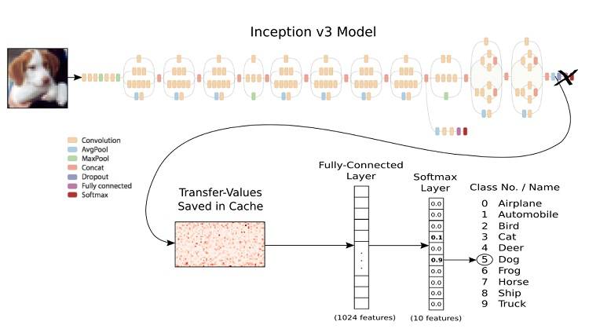
Following the realization that there were a variety of pretrained
image classification models available, we promply started research on comparisons
between the different models. The best summararization of this research is in the
form of (from ):

The following code segment, also from ,
demonstrates how to use the Mat objects (which we previously showed how to load
from video files and webcam as well as classify) as input to the
Common Object in Context (COCO) Single Shot Multibox Detector
(SSD).
// replace with path where you unzipped coco-SSD_300x300 model
const ssdcocoModelPath = '../data/dnn/coco-SSD_300x300'
const prototxt = path.resolve(ssdcocoModelPath, 'deploy.prototxt');
const modelFile = path.resolve(ssdcocoModelPath,
'VGG_coco_SSD_300x300_iter_400000.caffemodel');
// initialize ssdcoco model from prototxt and modelFile
const net = cv.readNetFromCaffe(prototxt, modelFile);
// initialize tensorflow inception model from modelFile
const net = cv.readNetFromTensorflow(modelFile);
const classifyImg = (img) => {
const white = new cv.Vec(255, 255, 255);
// ssdcoco model works with 300 x 300 images
const imgResized = img.resize(300, 300);
// network accepts blobs as input
const inputBlob = cv.blobFromImage(imgResized);
net.setInput(inputBlob);
// forward pass input through entire network, will return
// classification result as 1x1xNxM Mat
let outputBlob = net.forward();
// extract NxM Mat
outputBlob = outputBlob.flattenFloat(outputBlob.sizes[2],
outputBlob.sizes[3]);
const results = Array(outputBlob.rows).fill(0)
.map((res, i) => {
const className = classNames[outputBlob.at(i, 1)];
const confidence = outputBlob.at(i, 2);
const topLeft = new cv.Point(
outputBlob.at(i, 3) * img.cols,
outputBlob.at(i, 6) * img.rows
);
const bottomRight = new cv.Point(
outputBlob.at(i, 5) * img.cols,
outputBlob.at(i, 4) * img.rows
);
return ({
className, confidence,
topLeft, bottomRight
})
});
return results;
};
The follwing figures ( and
)
also from provide a good sense of the spacial (screen
position) and linguistic (word class)
outputs of the pretrained COCO SSD mdel:
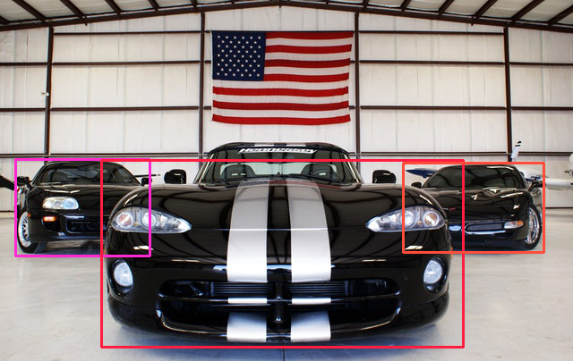
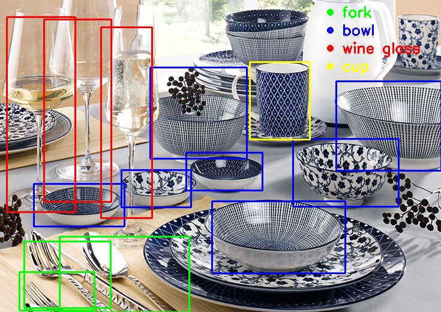
This section, and the following section, explain the series of
discoveries that caused us to switch from NPM/NodeJS to Python
during our neural network based research. All of the code after
the following section is written for Python 3.6.9.
For reference we have included
which demonstrates how to load audio using python's ffmpeg library. We do not
not use this method for the following ,
but we do use it quite often later on in
,
so it is included here in the audio research section.
import math
import numpy as np
import ffmpeg
from scipy.fftpack import rfft, fftshift
input_filename = 'test.mp3'
fft_size = 1024
sample_count = 0
buffer = np.array([])
dataframe, _ = (ffmpeg
.input(input_filename)
.output('-', format='s8', acodec='pcm_s8', ac=1, ar='44100')
.overwrite_output()
.run(capture_stdout=True)
)
length = math.floor(len(dataframe)/fft_size)
sample_count += length
dataframe = np.frombuffer(dataframe, np.byte)[0: fft_size*length]
buffer = np.concatenate((buffer, dataframe))
array = []
index = 0
def get_ffts(waveform):
temp_chunks = np.split(waveform, sample_count)
new_chunks = []
for j in range(0, len(temp_chunks)):
if len(temp_chunks[j]) >= fft_size:
new_chunks.append(temp_chunks[j])
channel_ffts = []
for j in range(0, len(new_chunks)):
chunk = new_chunks[j]
freqs = rfft(chunk)
freqs = freqs/fft_size
channel_ffts.append(freqs)
return channel_ffts
buffer = np.array(get_ffts(buffer))
In addition to loading the raw time-domain signal amplitudes,
also demonstrates how to obtain the real-valued frequency spectrum using the
discrete fast fourier transform (DFFT) on the real valued audio signal input data
sequences (time-domain). is the python module
we used to do this, and the reference material has this to say about the `rfft` function used in :
When the DFT is computed for purely real input, the output is Hermitian-symmetric,
i.e. the negative frequency terms are just the complex conjugates of the
corresponding positive-frequency terms, and the negative-frequency
terms are therefore redundant. This function does not compute
the negative frequency terms and the length of the transformed axis
of the output is therefore n/2 + 1.
The following figure from
(which also gives a formal definition of the Fourier transform) exhibits the difference
between the time domain and the frequency domain of a signal.
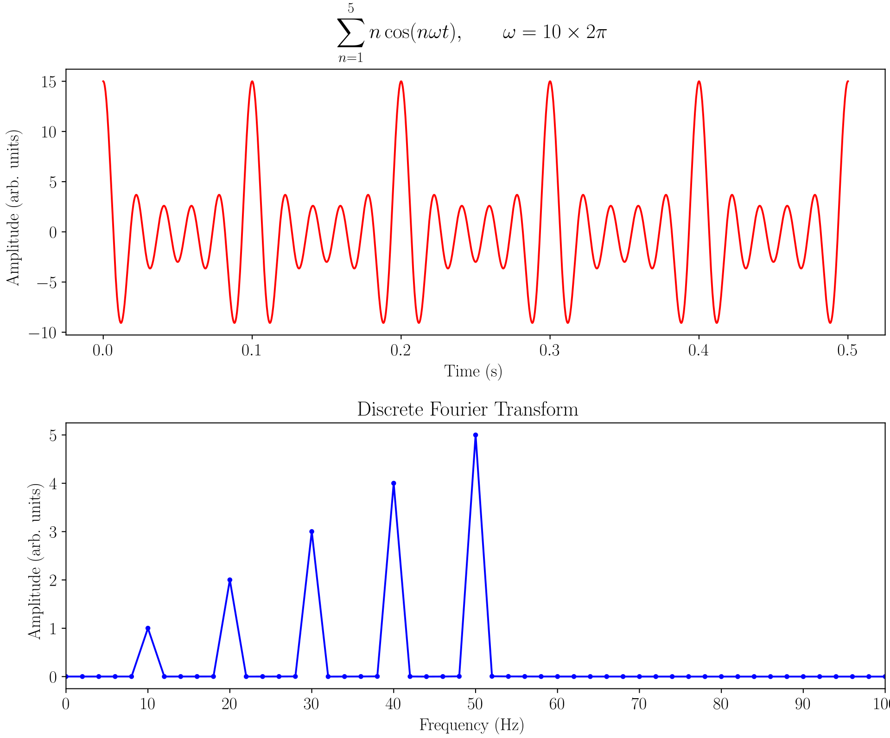
Later on in this
technique of loading the frequency spectrum of audio files is used to turn a relatively small
collection of music into a massive training data set. This data set is then split into training and
validation data for a modified time series prediction model, in effect making a signal prediction
tool (when used in combination with inverse DFFT to convert the frequency domain back into the time domain).
The following code segment from from
demonstrates the most effective process we found for
running automatic speech recognition locally, and it used a tool called PocketSphinx, created by .
import argparse, torch, torchvision, wave, math, struct, sys
import speech_recognition as sr
AUDIO_FILE = "./video-audio.wav"
ap = argparse.ArgumentParser()
ap.add_argument("-v", "--video", required=True,
help="path to the input video")
args = vars(ap.parse_args())
vframes, aframes, info = torchvision.io.read_video(args["video"],
pts_unit='sec')
aframes = torch.div(torch.sum(aframes, dim=0), len(aframes))
aframes = torch.add(torch.mul(aframes, .5), .5)
aframes = torch.mul(aframes, 255)
aframes = aframes.char()
aframes = aframes.numpy()
fps = info["audio_fps"]
for i in range(0, math.floor(len(aframes)/fps)):
wave_writer = wave.open(AUDIO_FILE, 'w')
wave_writer.setnchannels(1) # mono
wave_writer.setsampwidth(1)
wave_writer.setframerate(info["audio_fps"])
wave_writer.writeframesraw(bytes(aframes[i*fps:(i+1)*fps]))
wave_writer.close()
r = sr.Recognizer()
h = None
# recognize speech using Sphinx
try:
with sr.AudioFile(AUDIO_FILE) as source:
audio = r.record(source) # read the entire audio file
h = r.recognize_sphinx(audio,show_all=True)
for s in h.seg():
print(s.word, s.prob
except KeyboardInterrupt:
exit()
except:
e = sys.exc_info()[0]
print("Sphinx error; {0}".format(e))
Python bindings for PocketSphinx are provided as a part of a collection of ASR python
tools in , but it is the only
tool in that collection which allows for offline transcribing. The other solutions
readily available for ASR in python all required interaction with a
online service for either training or inference.
The absence of noise-proof ASR made it clear that we needed
finer-grain control over the neural network creation and training processes.
In order to do that, we decided to make a fuller commitment to using Pytorch and
learning more about (a.k.a.
TensorFlow/Keras),
but first we had to learn more about the Python programming language iteself.
Since we were also one modality short
of making a truely multimodal model, so we decided to practice Python by
exploring a new potential mode for our model: the linguistic mode.
Dense, real valued vectors representing distributional similarity information
are now a cornerstone of practical natural language processing (NLP). Similarity
is determined by comparing word vectors or “word embeddings”, multi-dimensional
meaning representations of a word. We chose the Python spacy module to help
us get up and running with word embeddings.
automatically downloads word-embedding models
and stores them locally for future use. We chose a word vectors model that covers a
huge vocabulary: en_vectors_web_lg. It provides 300-dimensional GloVe (Global
Vectors for Word Representation) vectors for over 1 million terms of English. This
was a good choice for modeling the complex relationship
between a limited number of image classes and a high number of potential query strings.
import spacy
nlp = spacy.load('en_vectors_web_lg')
tokens = nlp("dog cat banana")
for token1 in tokens:
for token2 in tokens:
print(token1.text, token2.text, token1.similarity(token2))
"""
Should output something like:
dog dog 1.0
dog cat 0.80168545
dog banana 0.24327643
cat dog 0.80168545
cat cat 1.0
cat banana 0.28154364
banana dog 0.24327643
banana cat 0.28154364
banana banana 1.0
"""
The following figures ( and
) from
(which provides further definitions) are good visualizations of the concept behind word embeddings and their
cosine similarities.
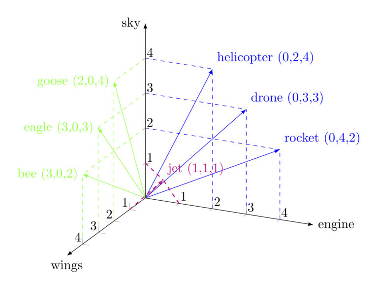

The following sections provide a detailed overview of the design and experiments of
a novel multimodal prototype system for event detection in videos that was developed
over the duration of this research.
The system in the following is a representation the
client-server application
we created which combines the modalities of the frame images (from user-provided videos) with the their
word embeddings (or multi-dimensional meaning representations of a word). This creates the
desired ability for the end user to query complex concepts via the linguistic modality (rather
than a series of individual image classifications) quickly and efficiently, with ever improving
accuracy and precision with each refinement of a query.

Because the entirety of a user’s video content is preprocessed and stored in word
vector
embeddings upon uploading, binary search procedures of the entire domain of a user’s uploaded video content can
be strategically reorganized categorically with rapid efficiency by
the server system, and with very little effort by the end-user. This multimodal functionality
ran with incredible efficiently on the prototype system.
The following outlines the steps of preprocessing a video
when one is uploaded to the server:
|
Step |
Description |
1
|
Receive the raw (usually mp4 encoded) video
files
on the server-side.
|
2
|
Save video to disk (under the uploader's
account folder).
|
3
|
Decode video frame-by-frame with ffmpeg.
|
4
|
Resize the video frames (299x299 for
InceptionV3).
|
5
|
Calculate the change of the RGB values
between each frame from step #4.
|
6
|
Calculate the standard deviation and
variation of the "delta frames" from step #5.
|
7
|
Find the middle of frame ranges that start
and end with frames whose RGB change are
withen atleast one standard deviation of the average change. This splits up the video into
periods of high-change (camera
panning, animations, actions) and low change (still and motionless scenes).
|
8
|
For each successive range of frames
alternating depictions of
action and stillness (calculated in step #7) use the middle frame as input to Pytorch's
pretrained
InceptionV3 model.
|
9
|
Save the thumbnail, weights, label string, and label word vector/embedding for each of the
inferred
frames of step #8.
|
In all of the experiments
the preprocessing time of a video was usually about
half the duration of the video itself. For example, a 10 minute long video usually
takes about 5 minutes to preprocess.
The file size for the final result of preprocessing
was approximately the same size as the uploaded video when using mp4 video format.
The following pseudo- outlines the steps for searching the
preprocessed video files when a set of positive and negative query strings is sent to the server.
The positive and negative input feature vectors are the sums of the positive and negative query
strings as word vectors. We do not normalize the feature vectors because it seemed to lose information
about occurance count (and cause queries to become inaccurate) when we tried.
def process_query(positive_feature_vector,\\
negative_feature_vector,\\
start_frame, end_frame, input_video):
video_proto = Video(input_video)
frames = video_proto.frames
new_frames = []
for frame_index in range(start_frame, end_frame):
frame = frames[frame_index]
start = frame.start
end = frame.end
word_vectors = frame.words
word_scores = frame.visualScores
new_frame = InfoFrame()
similarity = 0.
for i in range(0, len(word_vectors)):
word = word_vectors[i].word
vector = word_vectors[i].vector
score = np.multiply(positive_feature_vector, vector)
score = score.sum()
probability = word_scores[i]
if i < query_result_depth:
wv = WordVector()
wv.word = word
new_frame.words.append(wv)
new_frame.visualScores.append(probability)
new_frame.querySimilarityScores.append(score)
similarity += score*probability
dissimilarity = 0.
for i in range(0, len(word_vectors)):
word = word_vectors[i].word
vector = word_vectors[i].vector
score = np.multiply(negative_feature_vector, vector)
score = score.sum()
probability = word_scores[i]
if i < query_result_depth:
new_frame.queryDisimilarityScores.append(score)
dissimilarity += score*probability
new_frame.start = start
new_frame.end = end
new_frame.positiveScore = similarity
new_frame.negativeScore = dissimilarity
new_frames.append(new_frame.SerializeToString())
return new_frames
The sole purpose of the GitHub repository/branch mentioned in the introduction
(https://github.com/CrazedCoding/CrazedCoding.com/tree/thesis)
is to serve as a platform for the thesis work of the author. So far, it is the culmination of a combination
of many academic and entrepreneurial projects developed over the past several years.
The main component is a Linux-based python server that is capable of processing video
files for keywords, visually. It also has the ability to efficiently (de)serialize
messages sent to/from the client/server using Google Protobufs. It has a email based
sign-up system, and uses TCP/WebSockets to send/receive messages to/from the client/server.
It is written for Python 3.7+ and it's requirements are listed in the 'requirements.txt'
of the aforementioned GitHub repo/branch.
The client is written in pure HTML/JavasSript and can be found in the www folder.
To use this project for their own domain/server, the end user simply needs to replace
all occurances of the domain name string "CrazedCoding" (while preserving the
occurance's case) to their own server's domain name.
Server installation and configuration are documented in extensive detail on the GitHub
repository and branch mentioned before. Once finished completing the step-by-step installation
instructions, the end user should be able to start the
server with the simple command: 'sudo python3 server.py'.
Depending on what the end user's network setup is like, they should be able to open a browser
to view the client-side of their newly configured video-processing system. The first thing that should
done completing these steps is to create an account and log in using
the forms of the client-side system, shown in (left).
For the purpose of this How-To, we have already signed up using a temporary
email address with the user name "bituser", which will appear in the following
example figures.
This part of the site was the result of our obligation to isolate
potentially sensitive user video content to just the person who uploaded it.
We've effectively taken every measure possible to make video sharing between different users
of the site impossible, unless they share a username and email or password.
Once someone creates an account using a valid email address, they can log in,
and when they do they can access new options. These options are shown
in .
As can be seen in above, the options
for someone who is verified and logged in are slightly different from someone who is not. The main
differences are the "Upload", "Query", "Profile", and "Logout" buttons.
When the user presses the "Uploads" button they are taken to the uploads section of
their account. The "Uploads" section includes a "Choose Video" button which the user can
use to choose a video file on their local file system, and then upload it to the server
for preprocessing. The "Uploads" page of our example account
is shown in .
Our example account has uploaded four (4) videos of varying content and duration.
The four test videos account for 17 minutes of video. Every minute of video took
about half a minute minute of processing time during preprocessing.

In above, the test user's
uploaded video list is visisble, including:
- 2.mp4 (9min. 39sec.) - video of a news segment about
California wildfires;
- 1.mp4 (1min. 49sec.) - aerial video of three different homes
burning during a forest fire;
- cats_and_dogs.mp4 (3min. 8sec) - video of cats, dogs,
and sometimes other animals;
- Vietnam War - Music Video - Break on Through.mp4
(2min. 28sec.) - music video by The Doors featuring Vietnam war footage.
The test user's "Query" page is shown in
below (left). Once a user has uploaded content, they can create frame-by-frame
queries by clicking the "Query" button in the menu at the top of the page.
The page shown after clicking "Create Visual Query" on this page is shwon in
below (right).
The "Create Visual Query" dialogue allows the user to specify positive
and negative query keyworkds. The positive and negative query keywords
are used to sort the visual content of the "Uploads" videos list, frame-by-frame.
The exact mechanisms for this entire process are described

On the following page, in ,
the results to the above query are returned. The videos are ordered starting from
the one with the highest best scoring frame to the one with the lowest best scoring
frame. The scores of the frames of the videos are the same as those calculated
in .
Notice that the thumbnails for each of the videos has changed to be
the frame of highest-scoring frame of each video according to the query; in
particular the top result shows a thumbnail of a german shepard breed of dog.
We would like to note that this type of behavior was consistent for highly
specific nouns, like "fire", "truck", "walrus", but somewhat inaccurate for
less descriptive words like "danger".
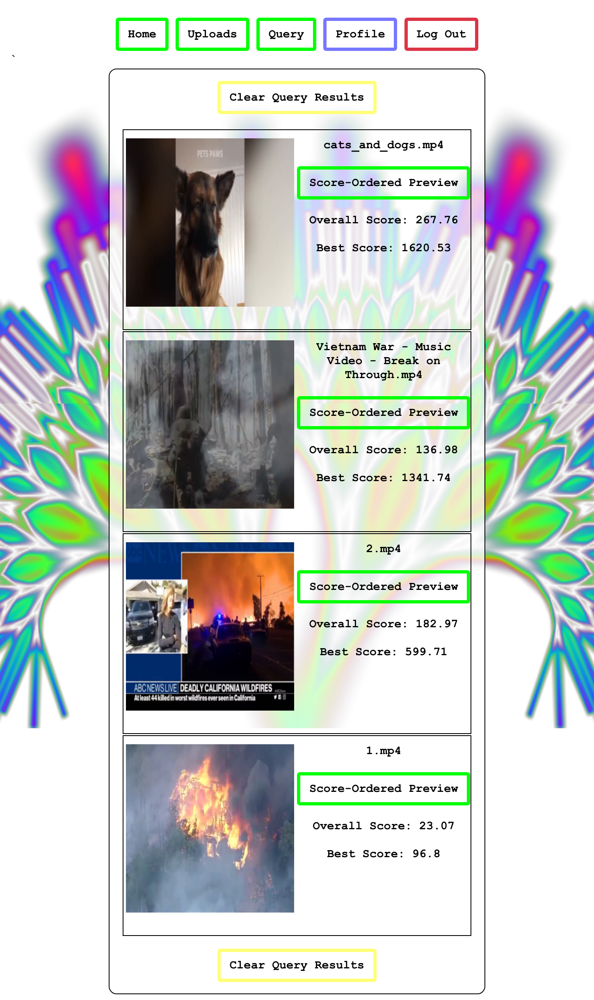
In below
are the video-by-video results to the previous query. The videos
are sorted according to their best-scoring frame's score. Notice
that even though the news about fires (row 3) has a better overall
score than the war footage does, it is still ranked lower because
it's best ranked frame was still less.
|
Video Name |
Video Content |
Best Score |
Overall Score |
cats_and_dogs.mp4
|
cats, dogs, sea-lions, penguins
|
1620.53
|
267.76
|
Vietnam War - Music Video - Break on
Through.mp4
|
war footage
|
1341.74
|
136.98
|
2.mp4
|
news segment about fires
|
599.71
|
182.97
|
1.mp4
|
three seperate house fires
|
96.8
|
23.07
|
The "Score-Ordered Preview" buttons visible in the query result
entries of open
the dialogue shown in on
the next page.
At the top of the "Score-Ordered Preview" dialogue
is a table listing the label strings (from the
InceptionV3 model), label visibility scores,
the label similarty scores (based on the positive query
strings), and the label difference scores (based on the
negative query strings).
In the middle of the "Score-Ordered Preview" dialogue
is a preview of the video. The user can click this to
start and pause the video, as well as navigate randomly
throughout the video.
The last item of the "Score-Ordered Preview" dialogue
is a preview of the frame scores. The height above the top and lower
parts of the graph indicate the frame scores.
The order of the top scores is the original video frame sequence.
The order of the bottom scores is based on each frame range's
frame score: if a continuous range of frame scores is higher than the average
score then the entire range is not seperated.
The blue/purple/pink/red
colors of the lines at the bottom are actually a linear interpolation from blue-to-red
based on the frame-by-frame scores. The highest scoring frame is blue and
the lowest scoring frame is red.
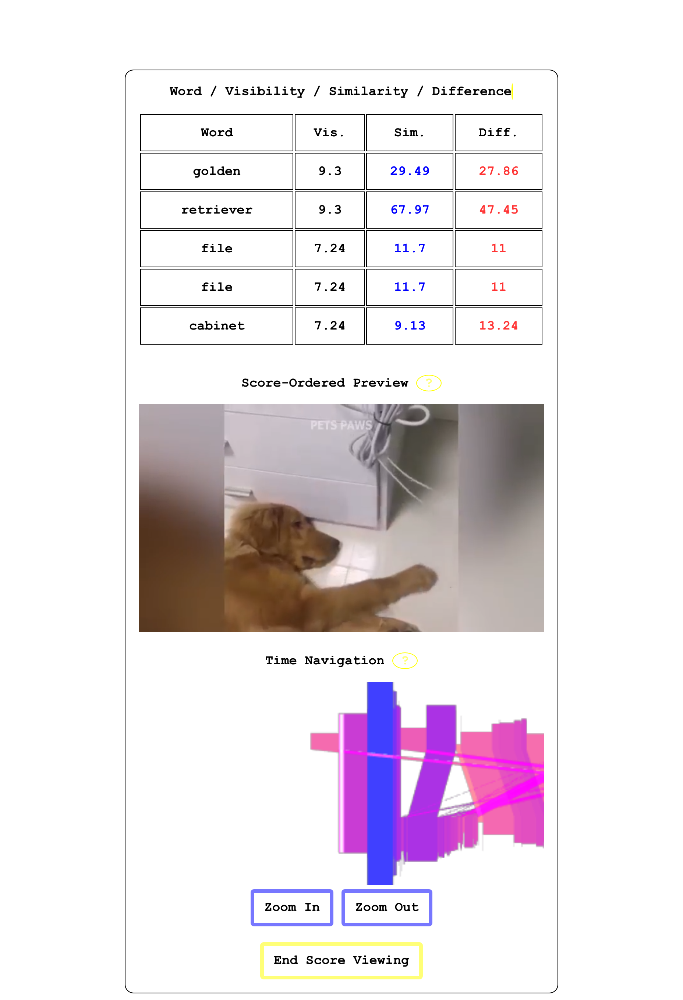
If we move the time navigation bar from the pink area to
the blue area (by clicking the blue area)
we start to see video of the german shepard we saw in the
thumbnail. It is the frame with the highest ranking score.
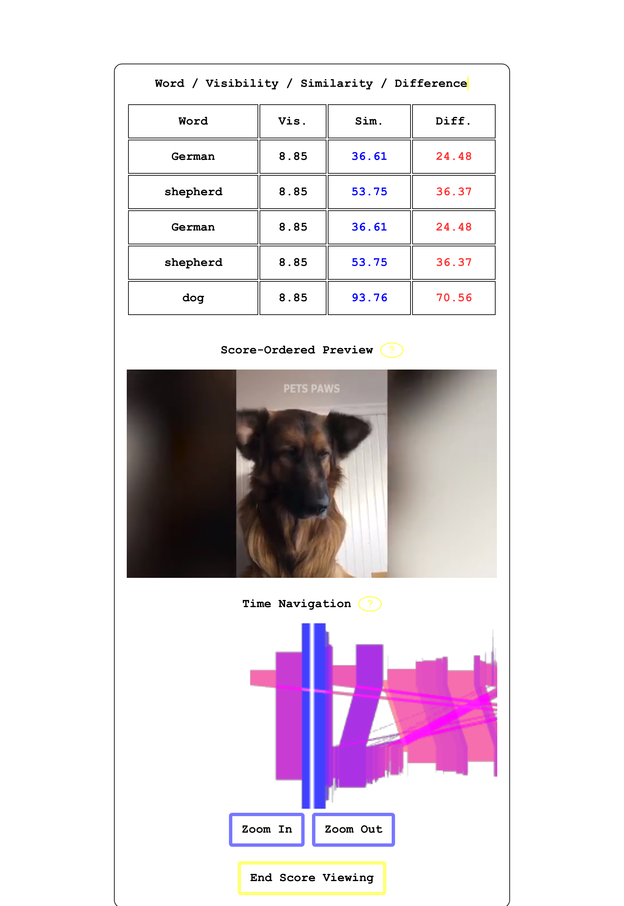
If we move the time navigation bar from the blue area to
the red area (by clicking the red area)
we start to see video of a cat.
It is the frame with the lowest ranking score in a query
results to a query where cats are ranked negatively.
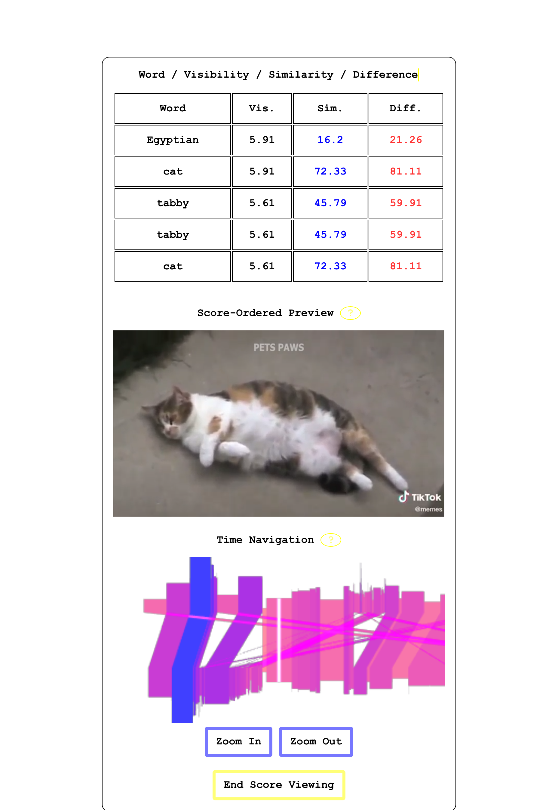
If we click the "End Scoring Preview", "Clear Query Results", and
then "Create Visual Query", then we can reconfigure our last query.
It has been shown that the query system can differentiate betwee cats and dogs, so
we will now demonstrate how it can identify threats. In
the query form has been reconfigured to test this.
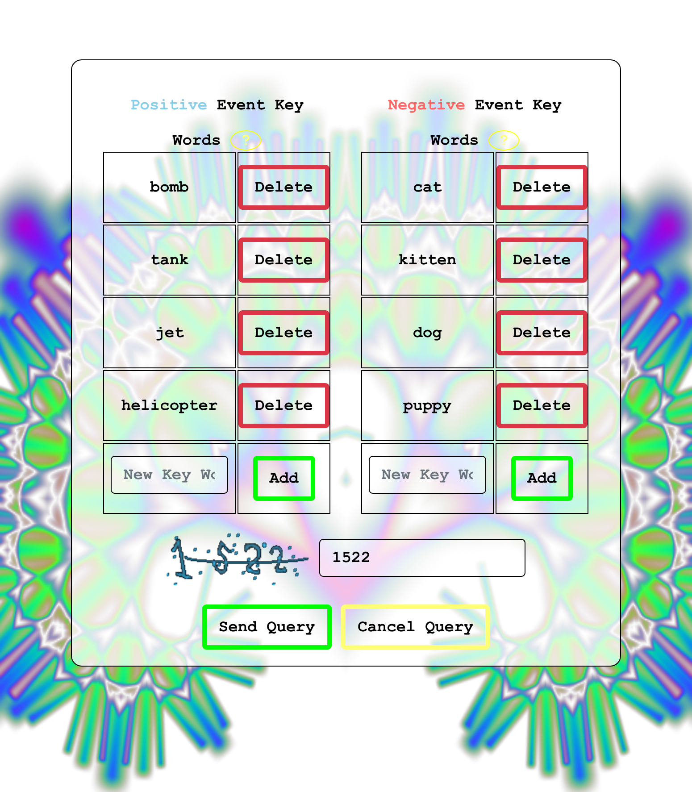
On the following page, in ,
the results to the above query are returned. Notice that the thumbnails
for each of the videos has changed to be the highest-scoring
frame of each video according to the query; in particular the top result
shows a thumbnail of jets.
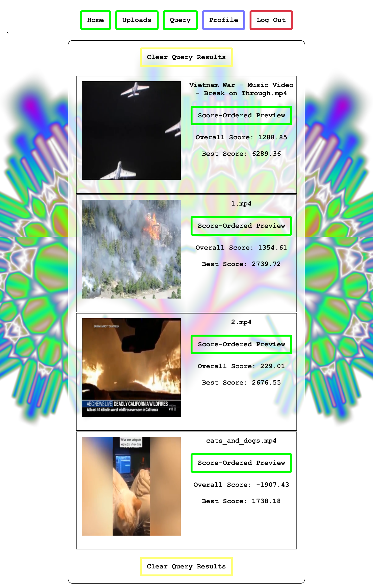
In below
are the results to the previous query. In general, the scores all have much
higher absolute values because the number of query vectors
has increased.
|
Video Name |
Video Content |
Best Score |
Overall Score |
Vietnam War - Music Video - Break on
Through.mp4
|
war footage
|
6289.36
|
1288.85
|
1.mp4
|
three seperate house fires
|
2739.72
|
1354.61
|
2.mp4
|
news segment about fires
|
2676.55
|
229.01
|
cats_and_dogs.mp4
|
cats, dogs, sea-lions, penguins
|
1738.18
|
-1907.43
|
The overall score column reveals that the query system is capable
of correctly identifying threats from a set of query words. Unfourtunately,
those query words had to be specific enough to match an object in the
scene containing a threat (most of the time).
Interestingly, though, the query system seemed to be able to discern
that videos of fire had threat scores somewhere in between videos
of small animals and videos of war marchines, even though our query did not
contain the exact word "fire".
It is also interesting that the news videos of fire had a much lower overall
threath score than the raw aerial footage of homes burning.
The results of these experiments have shown that the query system
has at least some semblance of accuracy and precision when querying
videos frame-by-frame for visual content based on query strings.
Since reading about a video application isn't entirely practical,
has been included in
the references section, and it is a YouTube video
of this experiment.
The following sections provide a detailed overview of the design and experiments of
an audio signal time series prediction prototype system that was developed
over the duration of this research.
The system in the following is a representation the Python
application
we created for learning and predicting audio signal frequencies. As input it takes:
(1) a list of input sound files to learn, (2) an optional weights file from previous
batches (a new weights file is generated every time the system trains), (3) a list
of target sound files to try to predict, and (4) an output file to store the resulting
predictions. The frequency histogram loading code was already briefly covered in
.

You can find a copy of this program in the form of 'audio_processing.py',
executable command-line tool and Python source code found in the 'audio-frequency-prediction-tool'
folder of this thesis' accompanying GitHub repo/branch.
The 'audio_processing.py' command-line tool depends on the 'audio_data.py'
file for the audio signal data loading, as well as the 'audio_model.py' file
for the Pytorch model loading/training/inference. The
below shows the layers of our
unimodal time series prediction model. It takes 15 steps of 1024-sized FFT's of
raw signle-channel audio signal time-domain samples of the input songs and
eventually tries to predict the next step in the sequence.
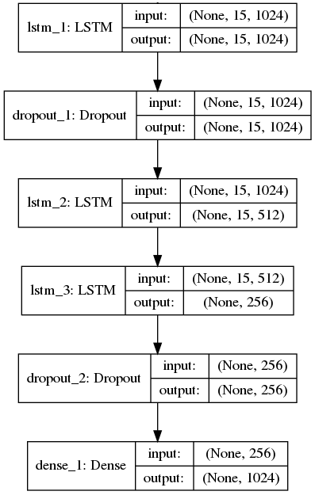
The model has 6 layers. The layers, and parameters to each, can be
configured by modifying 'config.json' in the 'audio-frequency-prediction-tool'
folder.
In the following section we will discuss how to use the 'audio_processing.py'
command-line tool in detail, and show the results to an experiment
that demonstrates the effectiveness of the tool.
Below, in , is the output of a terminal
session that starts with the execution of 'audio_processing.py'. It gives the program
three (3) parameters: (1) the input song, by ,
to turn into a frequency histogram and learn,
(2) the song to listen to and try and predict (point-by-point), and (3) the name of
the file to write the output to.
The program takes about 15 minutes to run, and generated a file named "28052020-152009-e4.h5"
which is the weights file of our model and can be reused by giving the command-line tool
the "-m" (or "--model") parameter to specify the weights file. using it's recently updated
model, the program runs point-by-point inference against the same input sound file and
saves the predictions to the output file ("output.mp3").
> sudo python3 audio_processing.py -i "Turret Opera Capella Version.mp3"\
-t "Turret Opera Capella Version.mp3" -o output.mp3
Loading config.json settings file.
Building NN model.
[Model] Model Compiled
Loading audio training input file(s).
Loading audio training input file: ['Turret Opera Capella Version.mp3']
.... A lot of ffmpeg-python output ....
Reformatting audio data.
Training model with audio data.
[Model] Training Started
[Model] 4 epochs, 32 batch size
Epoch 1/4
4319/4319 [==============================] - 84s 19ms/step - loss: 0.0268
Epoch 2/4
4319/4319 [==============================] - 77s 18ms/step - loss: 0.0261
Epoch 3/4
4319/4319 [==============================] - 77s 18ms/step - loss: 0.0251
Epoch 4/4
4319/4319 [==============================] - 78s 18ms/step - loss: 0.0238
[Model] Training Completed. Model saved as ./28052020-152009-e4.h5
Loading target audio files for point-by-point prediction.
Loading target audio file: Turret Opera Capella Version.mp3.
.... A lot of ffmpeg-python output ....
Merging target audio files with randomly sinusoidally changing weights.
Using current NN model to do point-by-point prediction of the merged target
audio files.
[Model] Predicting Point-by-Point...
4319/4319 [==============================] - 22s 5ms/step
Constructing waveform out of final point-by-point prediction.
Saving/encoding audio file to file: output.mp3
>
The results of running this program are nothing short of fascinating (and
fun to play with). We have taken the liberty of leaving the input and
output sound files of the experiment in the 'audio-frequency-prediction-tool'
folder of the master branch of the accompanying GitHub repo. We did not
leave '28052020-152009-e4.h5' because it was 150MB.
For readers unable to actually listten to the input and output sound files
included in the GitHub repo 'thesis' branch, we have included the following
waveform plots of the time-domain of input and output signals below in
.
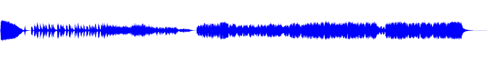
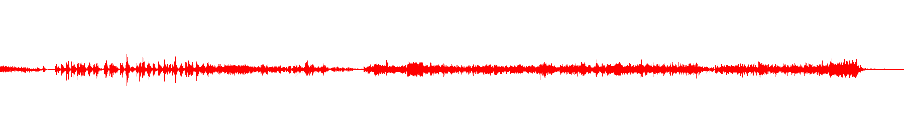
The audio prediction model is very good at predicting the original signal, and sometimes
even creating interesting and new sounds by having it try to predict sounds it has never
heard before.
Developing this program helped beat the learning curve for
implementing sequental/LSTM/prediction Python Keras/Tensorflow models by
periodically rewarding the developer with a sound that either validated or
invalidated their progress.
The answers to our questions and hypthoses are listed in
, and most of our hyptheses about neural networks and their
potential were correct, with notable exception of ASR, which is currently mostly comprised
of server-side solutions.
The topic of ASR will certainly be revisitted after researching denoising techniques, which have the
potential of increasing the accuracy of the handful of client-side ASR solutions.
The loss of ASR as a modality to the originally designed framework ultimately pushed
us in the direction of switching from NPM/NodeJS to Python.
The final multimodal Python
video processing server used visual and linguistic modes of input to obtain results of
queries generated by the user. This was all done to a satisfactory degree of precision
and accuracy, as the final interface proved to be easily managable, fast, efficient,
and produced generally correct results.
The final audio signal prediction tool was just the innovative type of project we
needed in order to replace the lack of audio research being done as a result of losing
ASR as a solution. Developing this tool helped beat the learning curves of Python, Pytorch,
and Keras/Tensorflow, thereby enabling us to do more in-depth and comprehensive neural
network experiments in the future, and creating an example for others to learn from.
Much of this research was done on an extremely strict and short schedule, and in the
future more time will be spent developing the associated GitHub project. It is highly
recommended that interested readers follow the 'master' branch of the final project
for updates in the future.